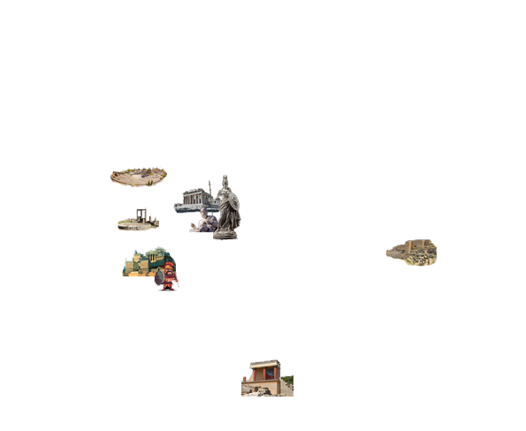
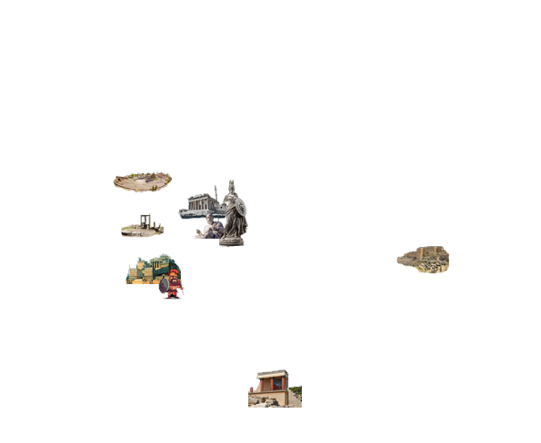
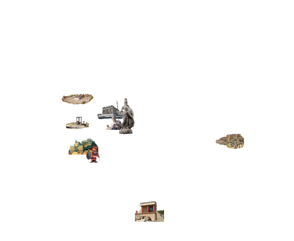
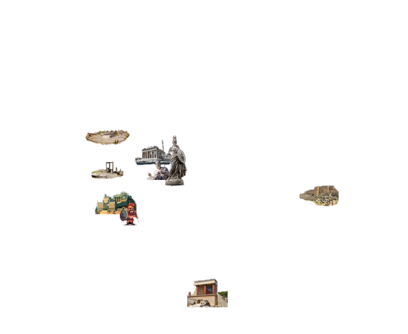

Origem
Atenas é uma das mais importantes cidades da Grécia Antiga, sendo considerada o berço da democracia e um
centro vital de cultura, filosofia e arte. É uma das cidades mais antigas do mundo, sendo datada de 4000
a.C. e com evidências de habitação desde à Idade do Bronze.
História e Desenvolvimento
Atenas se formou politicamente por volta do século VIII a.C., com a liderança de Teseu, unindo pequenas
comunidades. A cidade ganhou o nome de Atenas em homenagem á deusa da mitologia grega. Durante a
liderança de Clístenes no século VI, a cidade implementou um sistema democrático que permitia os
cidadãos participarem das decisões políticas.
O auge de Atenas foi durante o “Século de Péricles” (461-429 a.C.), se tornando um centro cultural e
intelectual naquela época. Este período foi marcado pelo avanço da filosofia com Sócrates, Platão e
Aristóteles e também da arquitetura como por exemplo o Partenon. E embora os cidadãos pudessem
participar da política, as mulheres e os escravos eram excluídos desse processo.
Legado Cultural
Atenas influenciou o mundo com o seu sistema democrático e principalmente na filosofia e na arte
ocidental. A cidade é frequentemente citada como o berço da civilização ocidental devido às suas
contribuições significativas em literatura, teatro e pensamento crítico. Monumentos históricos como a
Acrópole são testemunhos da rica herança cultural que ainda ressoa na sociedade contemporânea.
A Grécia Antiga era localizada no sudeste da Europa, compreendendo a península balcânica, ilhas do mar Egeu e a costa da Ásia Menor. Seu território era montanhoso, com vales e planícies férteis limitados, o que incentivou a formação de cidades-estado independentes, como Atenas, Esparta e Corinto. O clima mediterrâneo, com verões quentes e secos e invernos amenos, favoreceu a agricultura de oliveiras, vinhas e cereais. A proximidade com o mar permitiu o desenvolvimento de uma cultura marítima, com comércio e colonização por meio do Mar Mediterrâneo e do Mar Egeu.
Sócrates: Filósofo que promoveu o método socrático, incentivando o questionamento como forma de alcançar
o conhecimento.
Platão: Aluno de Sócrates, fundador da Academia de Atenas e autor de obras como A República, sobre
política e filosofia.
Aristóteles: Aluno de Platão e tutor de Alexandre, o Grande, contribuiu para diversas áreas, incluindo
lógica, ética e biologia.
Péricles: Líder político de Atenas durante o século V a.C., conhecido como a "Era de Ouro" de Atenas,
promoveu a democracia e a construção do Parthenon.
Alexandre, o Grande: Rei da Macedônia, unificou a Grécia e criou um vasto império, expandindo a cultura
grega até o Egito e a Índia.
A cultura grega era rica em arte, literatura, filosofia e esportes. O teatro era uma forma popular de expressão artística, com tragédias de autores como Ésquilo e comédias de Aristófanes. A mitologia desempenhava papel central, influenciando rituais religiosos e tradições. O respeito à educação era evidente nas academias e na busca pelo conhecimento. Os Jogos Olímpicos, realizados em Olímpia, celebravam a excelência física e eram dedicados a Zeus. A arquitetura, como os templos e estátuas, exemplificava o apreço pela beleza e simetria.
Guerra de Troia (c. 1200 a.C.): Narrada por Homero na Ilíada, foi um conflito entre gregos e troianos,
supostamente causado pelo rapto de Helena por Páris.
Guerras Médicas (490-479 a.C.): Conflitos entre os gregos e o Império Persa, resultando na vitória grega
em batalhas como Maratona e Salamina.
Guerra do Peloponeso (431-404 a.C.): Luta interna entre Atenas e Esparta pelo domínio da Grécia,
terminando com a vitória de Esparta.
Conquistas de Alexandre, o Grande (336-323 a.C.): Alexandre expandiu a influência grega, unificando
territórios sob sua liderança.
Zeus: Rei dos deuses e governante do Olimpo, associado ao trovão e à justiça.
Hera: Esposa de Zeus, deusa do casamento e da família.
Poseidon: Deus do mar, dos terremotos e dos cavalos.
Atena: Deusa da sabedoria, estratégia militar e artes, protetora de Atenas.
Apolo: Deus da luz, música, poesia e profecia.
Ártemis: Deusa da caça e da lua, irmã gêmea de Apolo.
Afrodite: Deusa do amor e da beleza.
Hades: Deus do submundo e guardião das almas dos mortos.